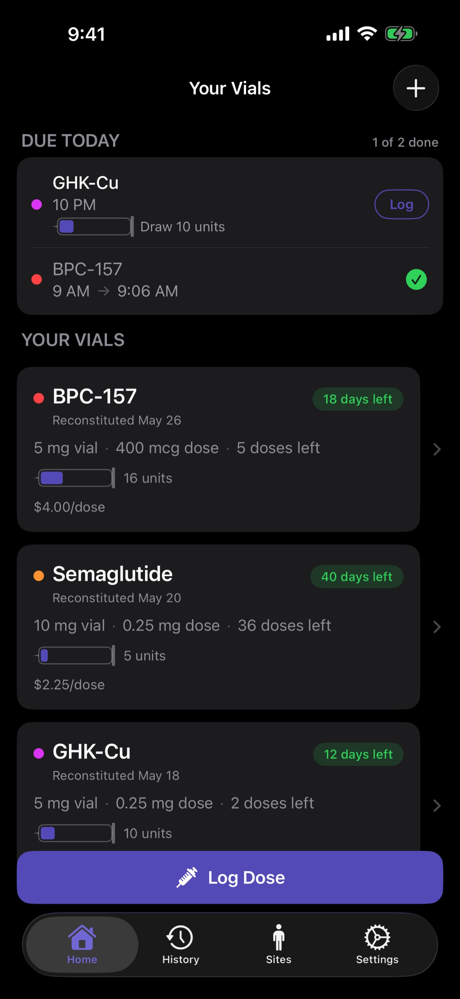
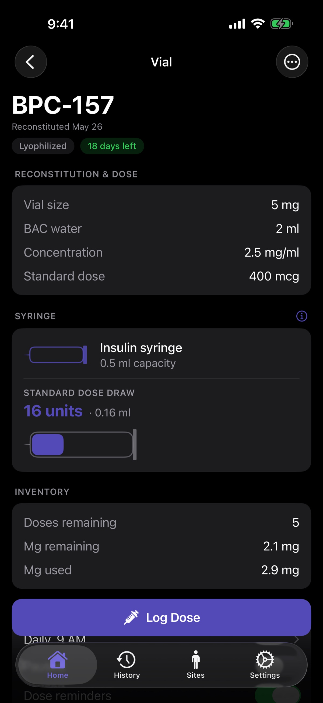
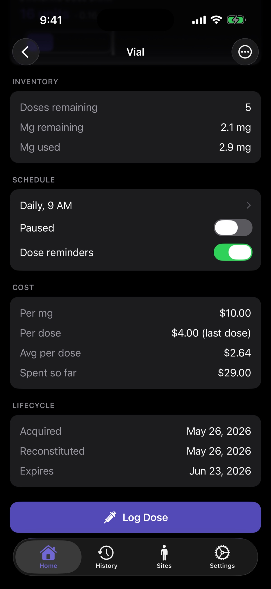
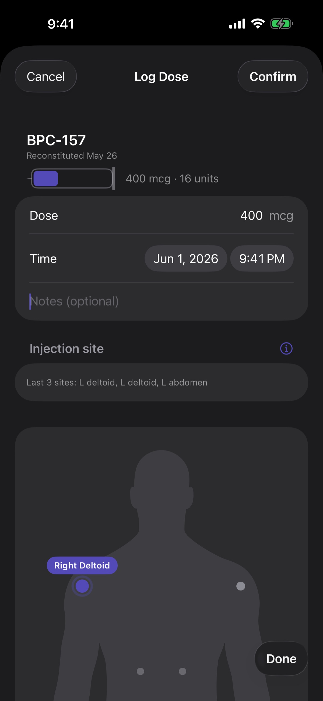
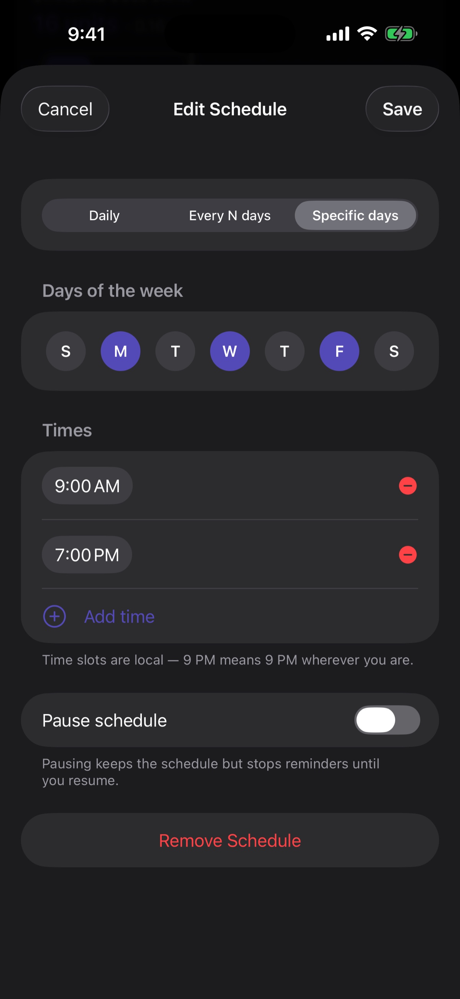
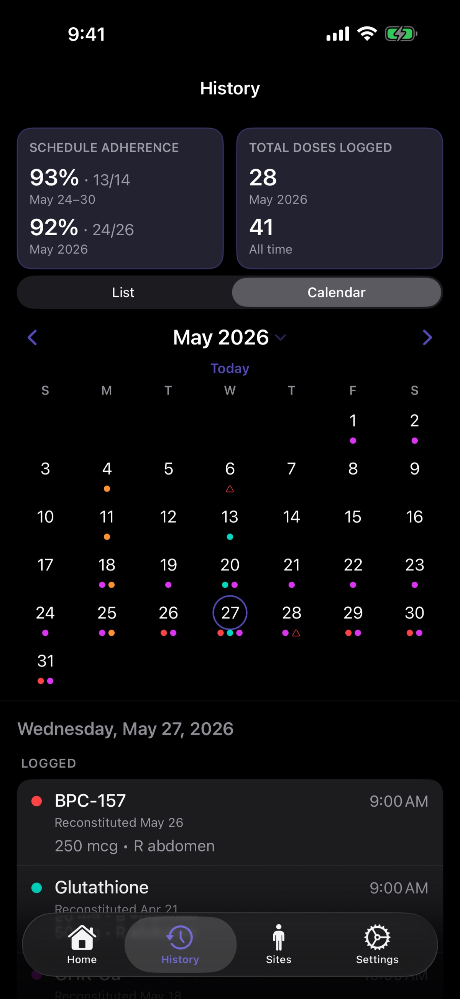
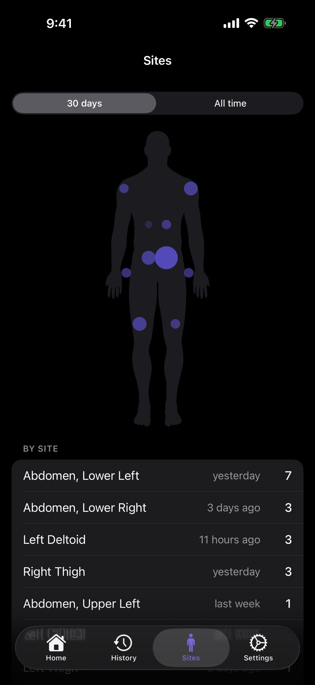

Vialed Free
$0
No credit card required
- Reconstitution calculator
- Dose logging with body map
- Schedule reminders & notifications
- Up to 2 active vials
- Up to 2 custom medications
- History list view
- Dark mode
Reconstitution math, dose history, schedules, and complete vial management — in one beautifully designed iOS app.

If you're running a peptide or injectable protocol — research peptides, TRT, HRT, GLP-1s — you already know the math matters. Reconstitution ratios. Bacteriostatic water volumes. Syringe units per dose. Days remaining in a vial. Schedule timing across multiple compounds. Most people are managing it in a Notes app, a spreadsheet, or — worse — their head.
Vialed is built for the way you actually use peptides and injectables. Calculate reconstitution down to the unit. Log every dose with timestamp and site. Track every vial's remaining volume in real time. Stay on schedule without thinking about it. One app, designed for precision.
Set up reconstitution once — then every dose draws from the saved math. Concentration, syringe units, and doses remaining are right there every time you open a vial. No spreadsheets, no recalculating, no rounding.

Every vial gets a full timeline — reconstitution date, doses remaining, expiration, and cost. Track exactly when you opened it, when it expires, and what you've used so far.
Free for up to 2 active vials. Premium removes the limit.

Log doses with timestamp, site, and notes in a single screen. Browse your full history on a clean calendar view. Filter by compound. See your actual protocol — not your intended one.

Set per-compound schedules — daily, weekly, custom cycles — and get reminders that match how you actually dose. Reminders adapt when you log early, late, or skip.

Every dose, every compound, every day — visualized on a clean monthly calendar. Color-coded by compound for stacks. Missed doses called out clearly. Adherence percentages tracked at week and month level.

See exactly where you're injecting — and where you're not. The Sites tab shows a body-map heatmap of your last 30 days plus all-time history, ranked by frequency. Catch over-used sites before they become a problem.

Your data stays on your device. iCloud sync uses your own Apple ID. No accounts, no tracking, no data sold.
No. Vialed is a tracking tool. It does not diagnose, prescribe, or recommend dosages. All dosing decisions should be made with a qualified healthcare professional. Peptides for research use are not intended for human consumption.
Yes. Your data is stored on your device and synced through your private iCloud account. We do not collect, sell, or analyze your usage data.
No. Vialed works without an account. iCloud sync uses your existing Apple ID.
Any peptide or injectable medication — including TRT, HRT, GLP-1s, growth hormone peptides, and research compounds. You define the medication, the concentration, and the dose — Vialed handles the math and tracking.
Vialed is currently iPhone-only, designed natively for iOS. iPad and other platforms are on the roadmap.
Vialed Premium is billed monthly ($9.99) or annually ($79.99). A 7-day free trial is included. Cancel anytime in your Apple ID subscription settings. Subscription renews automatically unless cancelled at least 24 hours before the renewal date.
Export your dose history as a CSV at any time.